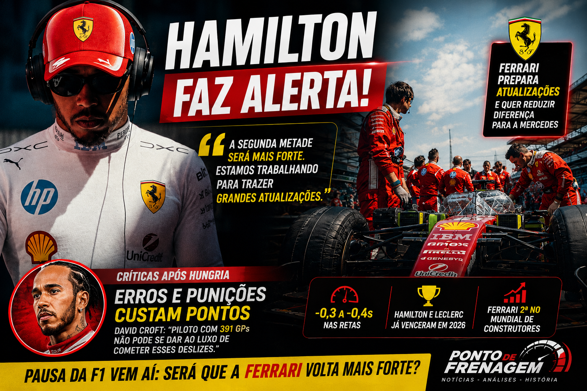

Hamilton faz alerta e Ferrari prepara reação na F1 2026; atualizações podem mudar a disputa pelo título

A pausa da Fórmula 1 pode marcar uma verdadeira virada na temporada 2026. Enquanto a Mercedes chega ao intervalo liderando o Mundial de Construtores com vantagem de 72 pontos sobre a Ferrari, Lewis Hamilton fez uma revelação que chamou a atenção do paddock: a equipe italiana prepara uma sequência importante de atualizações que pode alterar o equilíbrio de forças nas próximas corridas.
O heptacampeão acredita que o segundo semestre será muito mais competitivo para a Ferrari. Mais do que uma demonstração de confiança, suas declarações indicam que Maranello identificou onde perdeu desempenho durante a primeira metade do campeonato e já trabalha para corrigir esses problemas.
Gostou do conteúdo? Confira nossa loja!

Ferrari aposta em atualizações para reduzir principal deficiência
Desde a introdução do novo regulamento técnico de 2026, a Ferrari demonstrou ser um dos carros mais eficientes nas curvas. Em diversos circuitos, Charles Leclerc e Lewis Hamilton conseguiram acompanhar o ritmo da Mercedes nos trechos sinuosos.
O problema apareceu justamente onde a equipe menos esperava: as retas.
Segundo Hamilton, a Ferrari perdeu entre três e quatro décimos por volta apenas por causa da diferença de potência da unidade motriz. Em um campeonato tão equilibrado, essa desvantagem representa a diferença entre lutar pela vitória ou apenas disputar posições no pódio.
Por isso, o desenvolvimento da unidade de potência passou a ser prioridade absoluta para a equipe italiana.
Hamilton confirmou que novas peças chegarão logo após a pausa de verão, mantendo o ritmo intenso de evolução que a Ferrari apresentou durante praticamente todas as etapas da temporada.
Hamilton acredita em uma segunda metade muito mais forte
Além da evolução do carro, Hamilton também demonstrou confiança em seu próprio desempenho.
O britânico afirmou que costuma crescer na reta final das temporadas e pretende aproveitar as semanas sem corridas para voltar física e mentalmente ainda mais preparado.
A expectativa é que essa combinação entre evolução técnica e melhor adaptação ao SF-26 permita que o piloto maximize o potencial do carro justamente quando o campeonato entra em sua fase decisiva.
A Ferrari já mostrou que possui ritmo suficiente para vencer corridas.
Hamilton conquistou sua primeira vitória pela escuderia nesta temporada, enquanto Charles Leclerc também levou a Ferrari ao lugar mais alto do pódio em Silverstone.
Agora, o objetivo passa a ser transformar essas vitórias isoladas em uma sequência consistente.
Nem tudo são boas notícias: erros recentes continuam gerando críticas
Apesar do otimismo, Hamilton também chega pressionado para a segunda metade do campeonato.
Durante o GP da Hungria, o britânico sofreu duas punições importantes.
A primeira aconteceu na classificação, quando os comissários entenderam que ele atrapalhou Oscar Piastri durante uma volta rápida. A Ferrari assumiu parte da responsabilidade pela comunicação via rádio, mas Hamilton acabou perdendo três posições no grid.
Já durante a corrida, outro detalhe custou caro.
Ao sair dos boxes, Hamilton desligou o limitador de velocidade poucos metros antes da linha permitida, ultrapassando o limite por apenas 0,1 km/h. O resultado foi uma punição de cinco segundos que o fez perder uma posição na classificação final.
David Croft faz crítica direta ao heptacampeão
As punições chamaram a atenção do narrador britânico David Croft.
Para ele, pilotos com a experiência de Hamilton precisam evitar erros mínimos que podem comprometer uma disputa tão equilibrada.
Segundo Croft, detalhes como esses acabam tendo peso enorme quando cada ponto pode decidir o campeonato.
Embora tenha reconhecido que a punição pelo limite de velocidade tenha sido extremamente rígida, ele destacou que as regras precisam ser cumpridas e que pilotos experientes normalmente não podem desperdiçar oportunidades dessa maneira.
O que realmente pode mudar na Ferrari?
O grande desafio da Ferrari não parece ser mais o comportamento do carro nas curvas.
Ao longo da temporada, ficou evidente que o projeto possui boa estabilidade, excelente equilíbrio aerodinâmico e desempenho consistente em circuitos de média e baixa velocidade.
A diferença para a Mercedes aparece principalmente nas acelerações e nas retas.
Se as novas atualizações realmente entregarem o ganho esperado na unidade de potência, a Ferrari poderá eliminar justamente sua maior fraqueza.
Isso faria Hamilton e Leclerc brigarem por vitórias em praticamente qualquer tipo de circuito, aumentando significativamente a pressão sobre a Mercedes na disputa pelo Mundial.
No entanto, a evolução técnica precisará vir acompanhada de execuções perfeitas durante os finais de semana. Em um campeonato tão competitivo, erros operacionais, punições e pequenos deslizes podem custar mais do que alguns décimos de desempenho.
O que esperar da segunda metade da temporada?
A Fórmula 1 retorna após a pausa com expectativa enorme sobre o verdadeiro potencial da Ferrari.
A equipe italiana já mostrou velocidade suficiente para vencer corridas, mas agora precisa provar que consegue manter esse desempenho de forma consistente.
Caso as atualizações entreguem o ganho prometido por Hamilton, a luta pelo campeonato poderá ganhar um novo capítulo nas próximas etapas.
A pausa pode representar muito mais do que descanso para Maranello. Ela pode ser o ponto de partida para uma reação capaz de recolocar a Ferrari definitivamente na briga pelos títulos de Pilotos e Construtores.
Leia também no Ponto de Frenagem: